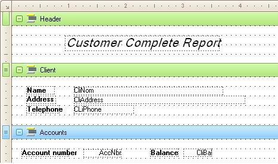
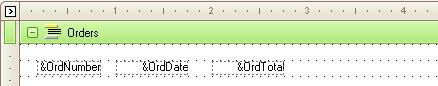

The &Line variable contains the current print line number for a Procedure object at execution time.
As it is a GeneXus built-in variable; &Line does not need to be defined.
Data Type:
Numeric (6)
Objects: Procedure
Notes:
- When generating in graphic mode this variable’s value is the length in pixels from the top of the page.
- Do not change the value of &Line, otherwise GeneXus will loose track of the paper ejection.
- When two programs have to share the same output; the variable &Line must be passed as a parameter between these programs.
- When a Report or Procedure receives &Line as a parameter, (&Line must be included in a Parm rule rule within the called program), the generated programs will have the following characteristics:
- The first Header is not printed (It is assumed that it has been printed by the calling program).
- If Ask functions are specified in the called program, they are performed only once, before beginning the data search
- The default EJECT is not performed at the end of the called program.
- Both programs (the called and the caller) must have the same values for PL, MB, and MT commands (PL is only considered when generating in text mode).
- Both programs must be a procedures.
This Customer Report prints complete information about each customer. The information that is printed will depend on the type (class) of Customer currently to be printed. The report makes use of two programs.
Program 1: PrintCustomer
Layout:

Source:
For each
Print Header
Print Customer
Endfor
For each defined by ActNro
Print Accounts
Endfor
// Print information of customer's purchases
CustPur.Call(CliCod,&Line)
Program 2, named RCustPur:
Layout:

Rules
Parm(CliCod,&Line);
Source:
For each
Where OrdDat >= &firstD
Where OrdDat <= &lastD
Print Orders
Endfor
Standard Variables List
Printing Commands Summary